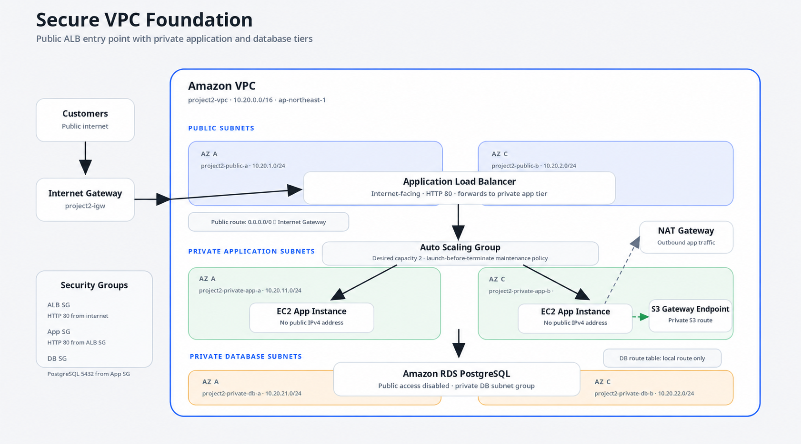

SOLUTION
Public entry point with private application and database tiers
The Amazon VPC uses public subnets for an internet-facing Application Load Balancer, private application subnets for EC2 instances in an Auto Scaling Group, and private database subnets for Amazon RDS.
Public traffic reaches only the load balancer. The application instances do not have public IPv4 addresses and accept HTTP traffic only from the ALB security group. The database is configured with public access disabled and is placed in a private DB subnet group.
The private application tier uses a NAT Gateway for outbound internet access and an S3 Gateway Endpoint for private S3 access. Route tables and security groups separate the public, application, and database layers.
ARCHITECTURE DIAGRAM
VPC network design

EVIDENCE
Console build, CloudFormation, and verification
The environment was built manually in the AWS Console, verified through the public ALB DNS name, documented with screenshots, reproduced with CloudFormation, and then decommissioned to avoid ongoing charges.
The GitHub repository includes evidence for the VPC resource map, subnet layout, route tables, security groups, private EC2 instances, RDS configuration, healthy target group, Auto Scaling Group, and successful browser test.
GITHUB
Implementation details
The repository contains the project README, CloudFormation template, console build notes, evidence screenshots, and cleanup documentation. The architecture was first validated manually in the AWS Console, then reproduced with CloudFormation for repeatable deployment and deletion.
View project on GitHub